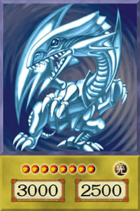
Dragão Branco de Olhos Azuis
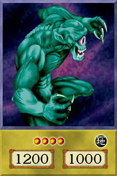
Gigante Hitotsu-Me
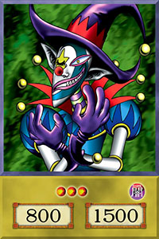
Saggi, O Palhaço das Trevas
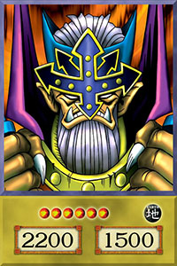
Juiz
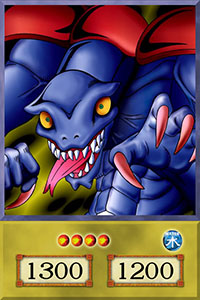
Grappler
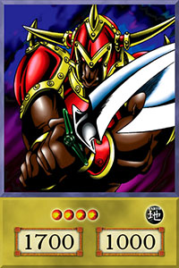
Touro Guerreiro
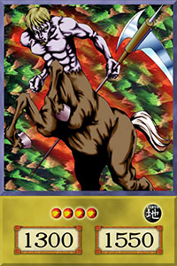
Centauro Místico
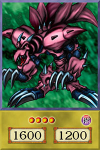
Ryu Kishin Potencializado
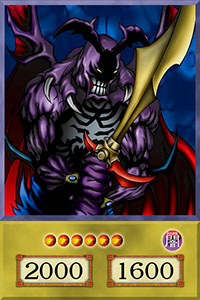
Espadachim Sorrateiro
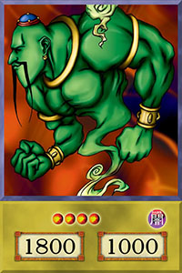
La Jinn, O Gênio Místico da Lâmpada
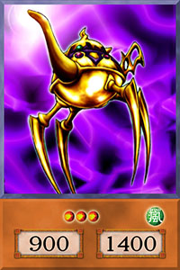
Lâmpada Antiga

Imperador Cruel
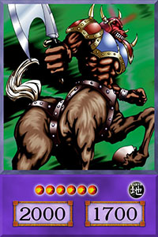
Centauro Furioso
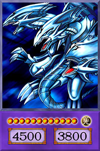
Dragão Definitivo de Olhos Azuis

Supremo Cavaleiro Mestre dos Dragões*
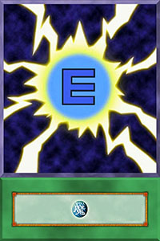
Gerador de Energia Negativa

Impedir Defesa*

Polimerização

Remover Magia
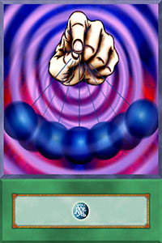
Controle Mesmérico

Reviver Monstro
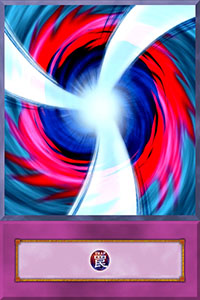
Negativação de Ataque
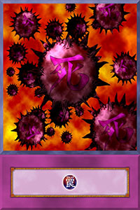
Vírus Esmagador de Cartas
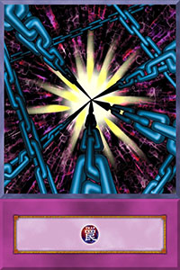
Feitiço Sombra*
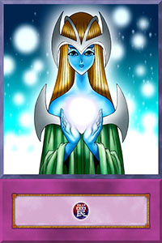